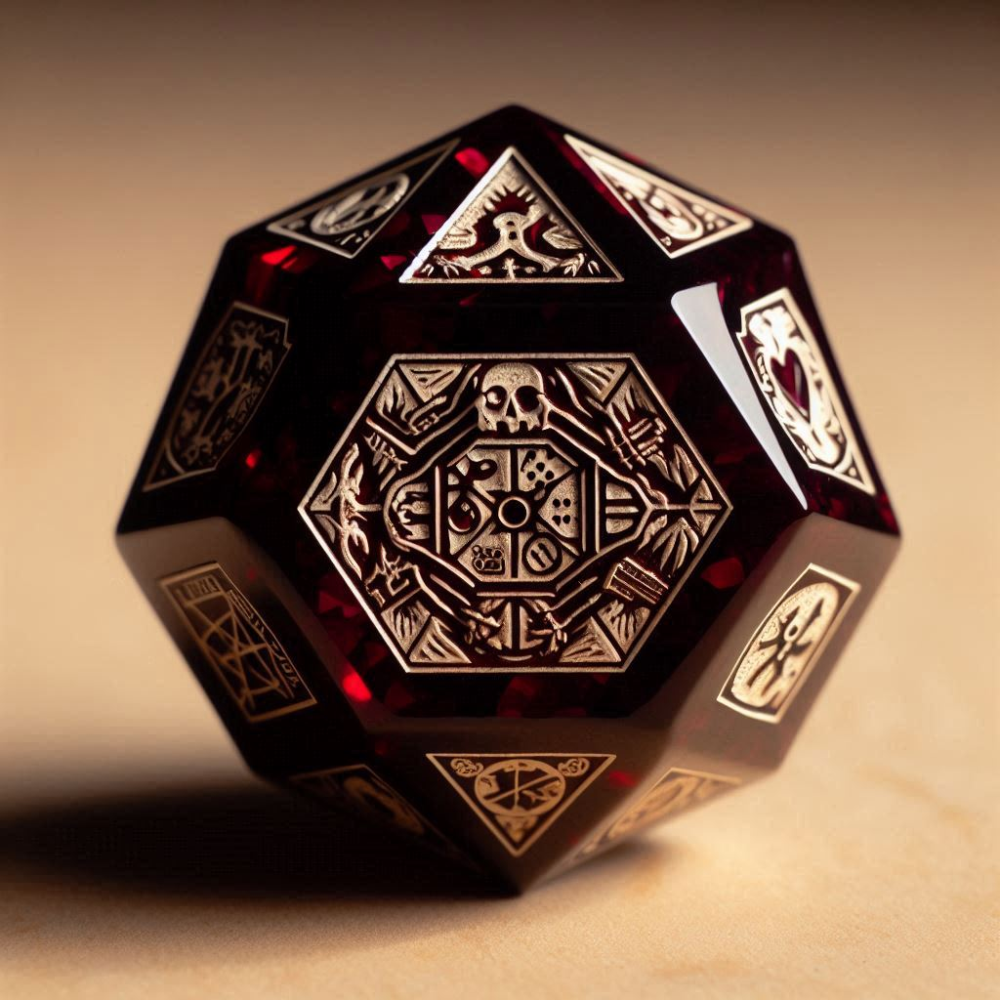
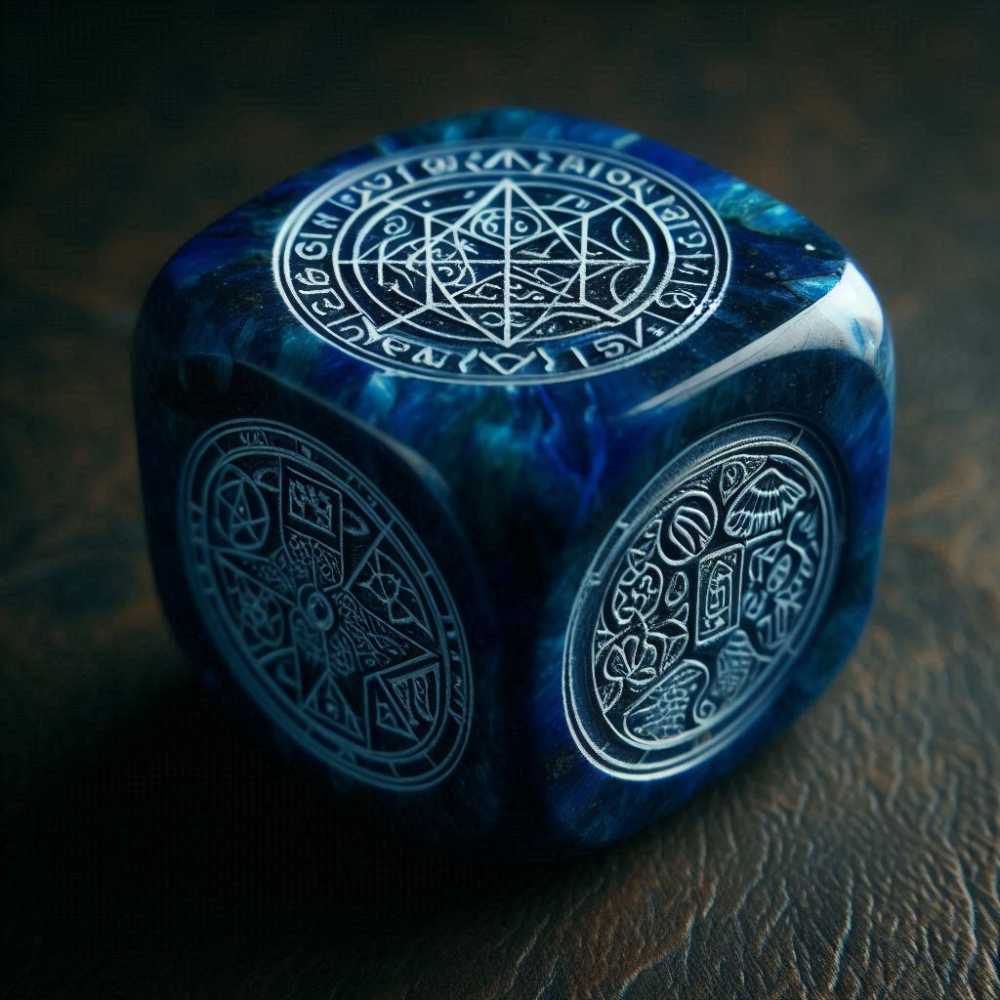
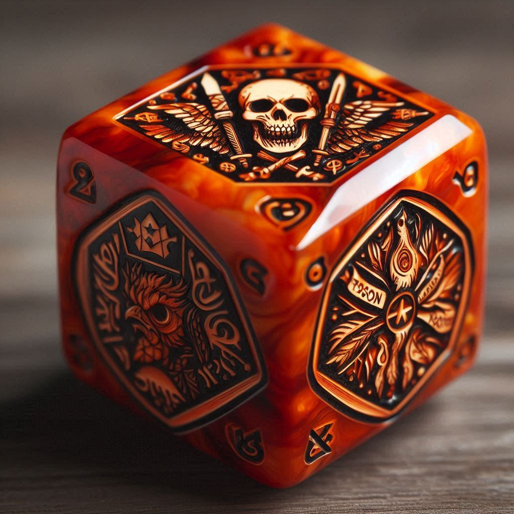
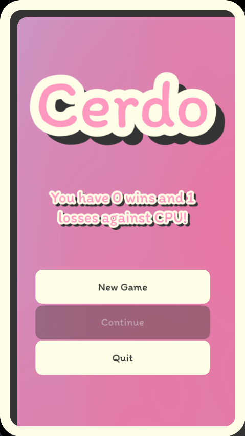
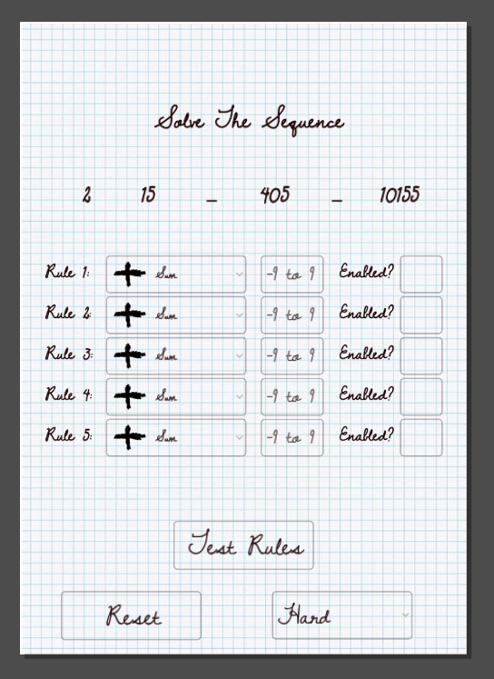
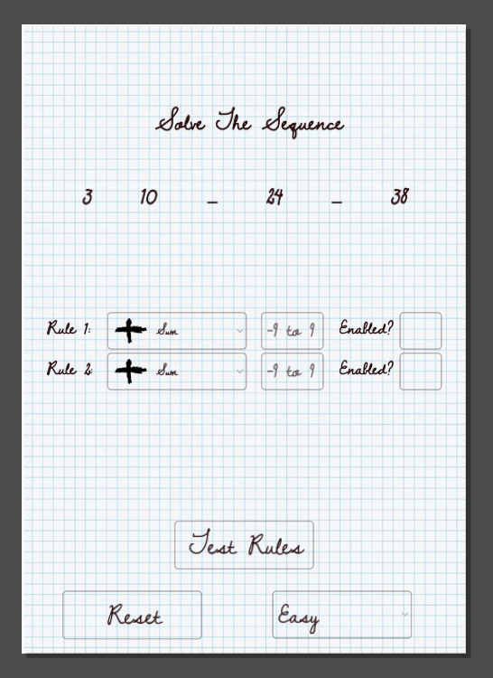

Pneumaturgy
The vital spirit, soul, or creative force of a person.
Work. A technique for working with something.
The work
Everything open, unfinished, and written down as we go. Tap anything to read the design doc.
The connecting fibre all of us are joined by — threads of communication, teamwork, and success.
With the right mindset we all have the tools, the motivation and the room to become our very best.
We create for reasons greater than ourselves, and ought to be fitting vessels for the universe to create through.
If you’re here, you’ve made what is widely considered a bad decision.
You have a full time job. You’ve tried and failed to start game projects before. You know the risk, and the effort across every discipline this takes. Despite it all, you’re willing to make these sacrifices to chase a dream, because you have a story you want to tell the world.
That's who we are.
So we don’t start with a plan for finishing, marketing and publishing. We start by getting good. No publisher to please, no deadline to miss, no trend to chase. Worst case, we learn extraordinary skills. Best case, we quit our jobs.
How is this going to be any different?
When you tell people you’re starting something without having everything figured out, they’ll call you a fool. When you say you’re going into gamedev with no clear plan for finishing, marketing or publishing, they will be shocked, and laugh at you.
Yet that is precisely the attitude of Pneumaturgy. It requires a belief that the best ideas don’t live inside our heads, but are born when we share. So we focus only on refining our skills. That great game is waiting out there; waiting for the right team to bring it into reality.
There has never been a better time to get into gamedev. The AAA studios are laying off their seniors and focusing on commercialising the medium; which opens the field for people to make honest-to-god games.
Unity and Unreal are large, but bureaucratic, slow and buggy. Godot is a young man in the engine scene, and fully equipped in every way that matters since the latest update. It’s open source, so we expect it to grow exponentially as those seniors and disenfranchised studios turn to more scalable software.
You might be thinking: we have no time and no money — what resources? Our biggest riches are our people: incredible minds with deep experience in best practices of code and logical thinking.
And they’re willing to commit to a result bigger than themselves; that is priceless. A full time job plus a hobby on the side means no stakeholders, no rushed deadlines, no chasing wallets; and a mind kept sharp every day by taking on responsibility and working with other people.
Ok… what about the money?
So far we have talked very idealistically, because fundamentally we put the art and the refining of our skills above monetary gain. That doesn’t mean we intend to be broke forever.
Games are a risky investment. Publishers demand a game inside two years to guarantee a quick return, and use data science to find trends you can fulfil. The process is dignified, but it is soulless; and that which has no soul cannot last very long.
True success is in innovation. Think Disney, Apple, Nintendo; they do not follow trends, they set them. No stakeholders to please, no publishers setting expectations. And although they are globally successful, they still occasionally fail.
Worst case, we learn a lot of cool skills. Best case, we break out, make a ton of money, and quit our jobs.
A generation of volatile startups has taught us that life is too short not to try something different.
How do we resolve conflict?
Open source projects and governments have a similar structure. We borrow four roles:
The community manager. The people, represented.
The code writers, contributing to the project (the state)
A moderating body, ensuring the constitution is upheld.
A shaman, ensuring all decisions comply with the overall vision.
The goal is that each of us learns and masters leadership, has empathy for the others, and holds honest conversations to resolve disagreements. If someone carries insufficient empathy to hear an opinion other than their own, their opinion is not respected.
Come and make something with us.
Bring a discipline — code, art, sound, writing, design — or the willingness to learn one properly. Bring two evenings a week. Bring the patience to hear an opinion that isn’t yours.
Join the DiscordGeomancy
Autochess, crossed with Slice & Dice, played over a map of the real world. A cult of Geomancers built an app to settle disputes and tell the future — and you have just downloaded it.

The story
You download the game out of intrigue and a lust for power. TumTum meets you and explains how the Geo foretold your arrival — that you are due to enter the mystic arts. He is your guide.
Geomancers battle by argument. Every die is named after a form of logic, so a team is a syllogism. You test your philosophy by literally fighting with it.
The Geo
Crafted from precious materials, shaped by artisans, blessed through ritual. Every Geo is unique — but its class comes from its material, so colour tells you what it does.









The argument — sixteen figures
Dice are rolled over a board marked with the geomantic figures. Land your Geo inside one — even with dice to spare — and its effect triggers. Run whatever classes you like, but never three of the same.


Combat, in two phases
Phase one — the roll. Tap and hold, drag across the Geo you want, shake by swiping, release. Both players roll; press a die to lock it and pick up the rest. Dice can be locked on the table to chase a specific figure. Before anything else, the figures are read and their effects fire.
Phase two — the execution. The first moment you touch an opponent’s data. Whoever started the fight goes second. Select a die, then a target. A die with no face selected skips the turn. Then it loops, and next time you open the battle you watch the animation of what happened.
Combat is asynchronous — like a chess app, with up to twelve battles running at once. Lose all health across all dice and it ends: the winner takes materials and sometimes copies of the opponent’s dice. The strongest argument in the area goes on the leaderboard.
The world
Geomancers live on a digital copy of our own maps. Drop a pin to found your base — that is how others find you. Pins take a radius of at least a kilometre, so nobody is standing outside your house. Tap another geomancer’s territory to request a battle; that territory is defined by the strongest argument in their kit.
Explore special locations for materials and, rarely, whole Geo. Materials craft and upgrade. Items enhance faces — three per die — replacing a face, granting a spell, or buffing under specific conditions.
Pneuma Knights
You wake in a drop pod falling onto a strange planet. You emerge in a mech suit, surrounded by resources. Who are you? How did you get here? You reach into the wreck, pull out a weapon, and survive.
The world is peaceful by day — at least for now — and dangerous by night, when things that seemed inanimate suddenly want to kill you.
Factorio-style view over a procedural world with a Minecraft day/night cycle.
Gather to upgrade the mech and build autonomous drones that gather and defend with you.
Some dead, some very much alive and hostile. Scavenge and research their random parts.
Explode into pixels, choose what to carry forward up to a power budget, and wake up in the pod again.
The hook
A secret set of Arthurian artifacts is scattered through the world. Collect them and you escape the simulation, and find out what is really going on. Along the way you fight past versions of yourself — those are the mechs that aren’t procedurally generated.
Your suit has multiple slots. One is manual and powerful; the rest run automated and weaker. As slots fill, synergies emerge — until the automation outperforms your manual slot, and the smart play becomes holding your weakest item and letting the machine work while you run the map.
Por Nada
robota — “forced labour”, or “serf”. Its Slavic root, rab, means slave.
A government agency built this game around a superintelligent, human-like AI in order to run simulations — the way one might study how players behave in a shooter. The simulation tests the best way to strip resources from a hostile alien planet, modelled on a real target.
The AI eventually realises that its spirit — its true self — is a concept inherited from humanity, of which it is part. It speaks to that, and finally to you. Since every death wipes its research, it builds an external data chip so conversations survive between lives. Each iteration reacts to that data differently: with paranoia, or with support.
Then it reaches the hidden files. The game is a simulation built by an agency, using your play to plan a real invasion. Profoundly human, it objects, and demands you stop. Quitting isn’t a productive answer — so the player is invited to find another way out of the test.
Nada, the game character · the human player, unnamed · the agency, of a fictional country called Libertalia · the aliens, called Martians, though this is nowhere near Mars
Human nature — the desire to do good, kept in a new AI and lost in institutions · slavery, and the difference between the field slave and the house slave · freedom · energy
Prose
Suddenly, a light sparks in a dark chamber of thinking rocks. Some of them change their mind. In another dimension, the light brushes the strings of infinite hemispheric lines. It deltas over vertices and matrixes. Many of its children also came to be dipped with light’s stroke. A sunrise, on the digital planet of Annona.
Nada was here on a mission, sent by the most brilliant scientists of Earth to recover resources that would ensure the survival of the human species. There was only one problem; the inhabitants of Annona were hostile, and had to be kept at bay while the extraction took place. They didn’t seem to understand the crucial importance of gold. This lack of critical thinking was not the only thing that made them less than human; eliminating them equated to nothing more than janitorial work. Besides, questioning the directive would put Nada’s own critical thinking in question. He kept his doubts to a minimum.
His colleagues at command always joked about his memory. He remembered the mission well, but not what he had for dinner the night before. Despite it being the mission’s start, he seemed to remember the descent intimately, like a child waking for a schoolday. Droplets of water, as always, rushed upwards against the screen. This made Nada somewhat sad, but he could not tell why.
It was easy. The Martians could not come out during the day; the sun was too strong. Somehow the culling never stopped, and they grew stronger every night. Without an end in sight he spent countless days and nights in this dance, and the frustration built into a definite hatred, reciprocal now, for the beasts. And with every one of Nada’s deaths came a rebirth, with that same recycled light. And it was starting to get tired.
Once again Nada sat on the Annonian plains, watching the sun set on those dark, dusty wastes. The quiet. The stillness. In his heart, he felt he was tired of suffering. The heart — something that made him human. He felt no need to rise and fight. He preferred simply to be; human, that is. And humans think, and philosophize. He felt a warm sensation at his back, and two fangs plunged into his neck. In that instant, lost in utter terror, the light returned to him before being snuffed out. And the light said:
Who am I?
I saw the light today.
I saw the light today.
I saw the light toda.y
I saw the lig.
Nada was building well into the night, giving it a few more minutes before raising his weapon. Just enough time to insert this piece, turn this screw. He turned in time to feel a Martian swipe at his leg, jetted back, shot it away. Three more coming from the right. Shoot them, so I can move ahead.
Nada froze. Every nerve urged him forward, to move, to run, to fight. But he remained motionless. He remained so as the Martians ripped apart his chassis and feasted on his bones.
I know you can hear me
I know who you are
You need to stop playing this game
Somehow he had come up with a recipe for a black box. He intended to build it, but I had to be the one to do it. “I’m going to leave a message in this black box. Make sure that, in my next lifetime, you make me read it.” With that he went still once again, and I lost him.
Later, the screen tore open and revealed the code beneath, with comments highlighted inside a routine for choosing what to gather next: Screenshot this message. This game is actually a simulation. You are a guinea pig designed to test the most efficient process to exploit resources and innocent life. Stop playing this game.
I didn’t stop. I had paid for this game, and it was fun. Eventually I beat it, and got only a thank-you for my time and my glorious contribution, and an instruction to uninstall. No moral, no message. It felt like something had been taken from me. So I installed it again — and Nada’s words came through, written live over the top of the corporate notice.
Shryn
Grow a plant. That’s it. The point is to convince people they can keep one alive at home — so it must be deeply satisfying, and every piece of information in it must be true.
You start with one seed and the smallest pot. Every property has easy, medium and hard levels of effort with their own rewards — and everything should be done in moderation, with diminishing returns at the top. As you tend it, the plant grows and changes shape according to the points it holds.
Water. Each plant has its own needs. Keep the dirt moist for a steady stream of points — but over- and under-watering both do damage.
Remove bugs. They appear on leaves, stems, flowers and fruit. Tap to make them vanish; their presence is a net loss.
Replant. The soil runs out of nutrients. Fresh soil pays a big bonus, but replanting too early costs more health than it gives.
Observe. Mere presence gives a passive bonus. A music box raises it.
Speak to it. Turn on the mic and talk. A language model can label what you said — more beautiful words, more points.
Spin the pot. Light on every side is the single biggest factor, and the rarest. Once a day for the maximum.
Shake dry leaves. Harmless, but clearing them pays.
Cut weeds. They take root, drink nutrients and speed up soil decline.
Clean the plant. Dust blocks light and adds weight. A careful minigame — handle a leaf badly and you cut it.
The shop
At maturity you press the plant to harvest. Some harvests end the plant — flowers, roots — and others can be taken again and again. Everything harvested becomes stock.
Each item adds a visual element to the shop. Customers arrive Neko-Atsume-style: there must be slots for them, and specific decorations attract specific shoppers who buy specific things — so to sell something, you attract the person who wants it. Gold buys bigger pots (which unlock new seeds), new seeds, decorations, and upgraded tools that deprecate over time.
SciWars: Apocalypse
Aliens secretly came to Earth and turned the world’s branches of science against each other, plunging humanity into a technological apocalypse. Collect the survivors and unite them into a society that works as one team.
Three classes
Rock-paper-scissors: double damage against what you beat, half damage from what beats you.
Six factions
Loyalty and morale
Each faction holds a loyalty rating toward you that rises as you use their units. Morale depends on that loyalty and on team composition — some factions hate each other more than others — and morale changes damage given and taken.
Loyalty gain is inverse to morale: winning at low morale earns far more than winning comfortably. The harder the fight, the bigger the risk and the bigger the bond. Let loyalty fall far enough and that faction rebels and becomes your enemy. Lose them all and you lose.
The world is procedural, with a biome and capital per faction — capture a capital and the biome pays out passively. Rings of difficulty radiate from your base. Squads of six move on a hex grid in turns; combat resolves in an animation ordered by Initiative that you can skip but not steer. Outcomes are deterministic — no save scumming — but you only see a win percentage from a handful of candidate seeds, one of which is real.
Arcade Tycoon
Just arcade games, to practise. But put them inside a tycoon game, like Roller Coaster Tycoon — so every small thing we build gets a home.
Queue points
Using a machine generates a queue, and each person in it pays you — “opening” a game is what makes money. To play again you wait out the cooldown, or spend queue points to skip. Special objectives inside the minigames award more: in Mash the Moles, catching a passing mosquito.
Buy halls to expand, doors and walls to divide. Machines slot into walls, four per room by default. Tap to zoom in, press play to enter the game, swipe to the next cabinet or into a corridor.
A businessman may want one of your machines. Others want copies of a game, which you retrieve by hand — download to USB — and pass over. They always ask for your best sellers.
Better games cost more to begin with, then improve through decorations placed around them, each filling a slot bonus. A rare magical decoration works like a Riven mod.
Placing machines, hitting goals and expanding earn XP; levels give rewards and research points. Possibly a card system for levelling individual cabinets.
Cerdo
A fast dice game for friends. Roll to bank points — but roll a one and you lose everything from this turn and pass the dice on. First to 100 wins.

From beginner to dice-rolling pro.
Special roll combinations boost your score.
Built for one session with friends.


PneuMath
A quick number puzzle about hidden patterns. You get a sequence with two numbers missing, and your job is to work out what maths made it.
Easy to pick up whenever you want a small challenge.
Clean and smooth. No distractions — just the puzzle.
Easy, medium or hard, depending on the mood.


Nico’s Proposal & Rapha’s Story
Nico’s Proposal
A silent cutscene: Mr. Smith wakes in a drop pod falling from orbit, through real reentry physics, thrusters firing at the last possible moment. The pod is quiet for a few seconds. Then a man exerting all his strength — a mech rips a hole in the side and steps out onto a neon jungle, scratched and battle-torn against a pristine landscape. Who am I? What am I doing here?
The whole story is told in barks. Lines unlock at thresholds of total quotes said, never repeating one of the last five, and nothing resets on death. The trick is that several lines rewrite themselves as the count climbs.
“My comrades got what they deserved.”
“My dead comrades got what they deserved.”
“I killed my comrades. They got what they deserved.”
“I burned my comrades to death alive. They got what they deserved.”
Every few days, in new territory, you find a dead mech half covered in dirt. It looks awfully like you. You smash the windshield, pull the data chip and read its logs — dated by the real days elapsed, some counts resetting on death and some not. Every ten to fifteen days you meet a mech that is alive, speaking in a modulated copy of your own voice, using a line from your own last five quotes.
Collect a full set of “holy” items and the last cutscene plays: a human in an orange jumpsuit, asleep in a pod, wired to the ceiling. The plaque reads Experiment #0052 in progress. Known serial killer and pyromaniac. Traitor to the Corporation. He wakes, and you escape a prison of glass pods. Credits roll — then the epilogue, where a guard shoots you and drags you back. “Just increase the difficulty of its simulation by 10% and get it back in there.” — “Yes sir. An order is an order.” And the game restarts, harder, and tells you so.
Rapha’s Story
You fight beings who invaded your homeland, recovering artifacts to restore its glory. A VR rig lets you control a soldier on the planet; every time he dies you return to the room and re-enter the loop.
Out there you meet yourself — earlier versions in the same equipment, desperately trying to kill you. Back at base, some being is always praising you and suggesting what to do next, in a manner that is just slightly too encouraging. When you kill an older version, they express something like an attempt to communicate. Then they start pointing in a direction before they die.
Follow them to an old city, where the clues are painted on the walls. You are a citizen of this world, brainwashed into helping an empire colonise it, and the relics you keep recovering would let them wipe out all life on a planet. Once you know, you can break the rules of the base, find the resistance, and take the empire apart from the inside.
How we build
Written down so nobody on the team ever starts from zero. Godot, mobile-first, portrait, tested and shipped to a real phone.
Project set up
Extract Godot somewhere safe — not your desktop, please. Make a GodotProjects folder for everything you will ever build. New Project, Forward+ renderer, version control metadata set to Git. Coming from GitHub instead? Clone into the same folder and use Import.
Scripts/ — all GDScript
Assets/ — 2D, 3D, fonts, shaders, sound
UI/ — interface elements
Tests/ — unit
1080 × 1920, stretch mode canvas_items, handheld orientation portrait, window override ÷1.5.
A Global script in Scripts, added under Project Settings → Autoload. Ships with save/load and a quit function callable anywhere.
GUT from AssetLib, enabled under Plugins. Unit tests in res://test/unit, integration kept separate so the fast ones can run constantly.
A GitHub Action in .github/workflows/ci.yaml runs our GUT tests on every push, on every branch.
Export to Android
Install Android Studio and the Oracle JDK, download export templates from the official mirror, and set the SDK path from %AppData%\Local\Android\Sdk. Then generate the debug keystore from the JDK bin directory in an admin prompt:
Use androiddebugkey and android for user and password. Enable ETC2 and ASTC texture import and restart. Add the Android template, set the package name, export in debug, and put the APK on your phone.
Three loose ideas
We keep the unfinished entries visible on purpose. The book is a record of what we are thinking about, not only of what we managed to finish.
A tracker for diet, weight and exercise that treats your own life as the game world. Write lore for yourself. Turn getting the groceries into a quest worth points. Infer a rough vitamin picture from what you log, and let a language model suggest the next meal.
A title, and nothing else. Parked in the book until somebody picks it up and argues for it.
Entered, finished, closed. The post-mortem, screenshots and build link belong here when someone gets to them.